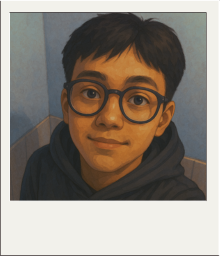

Hai, aku Raza.
Dari kecil, orang-orang bilang aku punya aura yang beda—katanya sih ganteng alami, seperti punya aura tersendiri yg bkin aku ganteng dimata orang lain. Bukan sombong ya, tapi emang dari dulu banyak yang bilang begitu.
Aku suka duduk sendiri sambil dengerin musik, bukan karena kesepian, tapi karena cuma di situ aku bisa ngerasa tenang.
Musik udah jadi bagian dari hidupku. Ada perasaan yang nggak bisa dijelasin setiap kali nadanya masuk ke telinga, kayak ada yang ngerti isi kepala tanpa harus banyak berbicara. Kadang aku ngerasa, dunia ini ribut banget, tapi musik ngajarin aku caranya stay calm while still feeling full.